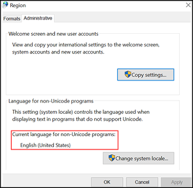

Install Server with Advanced Reporting BIRT Extension
- When the Advanced Reporting extension is installed, the prerequisite Advanced Reporting BIRT extension is installed with following default settings:
- The installation path is “$SystemDrive\Program Files\Apache Software Foundation\Tomcat 10.1”.
- The default connection port assigned to the Tomcat server is 18080 (if the default connection port is in use, the next available free port is assigned to Tomcat).
- The LocaleName is set according to the current Regional settings. To verify the Regional settings, navigate to Control panel > Region > Administrative.

- After successful installation of the Server, check that the Apache Tomcat service is running in the Services window, otherwise manually start it.
- Check the port value in the Birt_Installer_[yyyymmdd-hhmmss].txt log file located at C:\ProgramData\Siemens\GMS\InstallerFramework\GMS_Prerequisites_Install_Log to confirm the port assigned to Tomcat. A different port value is auto-assigned in case a default value (18080) is already used.
- Manually set this auto-assigned Tomcat port number (other than the default port number) in the Url field, in the SMC when creating Advanced Reporting web application.

NOTE:
There is no support for remote Tomcat Server for Advanced Reporting.